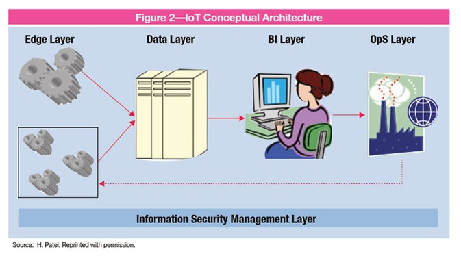

Riesgos del IoT
22 Octubre, 2019
Después de una introducción al IoT y un repaso de las tendencias en la industria, nos podemos hacer una idea de lo que esta tecnología puede aportar no solo a las organizaciones e individuos, sino a toda la sociedad. Con esta idea en mente, en este post me voy a centrar en los riesgos que genera el IoT.
¿Estamos preparados para los riesgos?
Como ya comenté en el primer post, los dispositivos de IoT están creciendo a ritmos agigantados lo que supone un aumento enorme en la cantidad de dispositivos conectados a internet. Según un artículo de ISACA, se gastarán cerca de 6 trillones de dólares en soluciones IoT a lo largo de los próximos 5 años. [1]
La industria está cambiando rápidamente y los nuevos casos de IoT están madurando. Cada vez se les está añadiendo más y más funcionalidad a los sistemas IoT para tener mejoras sobre el mercado y para tener beneficios funcionales. Mientras se crean estas mejoras, en la mayoría de los casos la seguridad de los sistemas IoT se ignora durante el diseño y esto genera un gran riesgo. [1]
Respondiendo a la pregunta, aún estamos lejos de estar preparados para los riesgos que genera el IoT. Aun así, ya se están dando pasos para la regulación de esta tecnología.
¿Por qué necesitamos seguridad?
El IoT no se queda indiferente ante el enorme y rápido avance de la tecnología. Según esta avanza, se crean dispositivos más inteligentes y cada vez más dispositivos están conectados a internet mediante una gran variedad de plataformas. Los problemas de privacidad, hacking y otros delitos informáticos, aumentan la probabilidad de fracaso empresarial. Esta probabilidad de fracaso es proporcional al aumento de la dependencia de internet por parte de las empresas. Las hace vulnerables y los auditores internos deben controlar de cerca los riesgos que esta enorme dependencia puede generar. [2]
Estas son algunas evidencias de hacks sobre dispositivos IoT:
- La Administración de Drogas y Alimentos de los Estados Unidos emitió consejos de seguridad para los dispositivos cardíacos sobre la amenaza de piratería informática, y el St. Jude Children’s Research Hospital parcheó vulnerabilidades en sus dispositivos médicos de IoT. [3]
- Hackers demostraron un ataque inalámbrico en un automóvil Tesla Model S. [4]
- Investigadores hackearon una Smart TV de la marca Vizio para acceder a una red del hogar. [5]
¿Cómo podemos mejorar la seguridad?
Para mejorar la seguridad es necesario el uso de algún marco como el marco de Zachman. Lo que diferencia este marco a otros intentos por mejorar la seguridad del IoT es que no solamente se centra en la seguridad del dispositivo, se centra en la seguridad sobre las cuatro capas de la arquitectura IoT: [6]
Centrandonos en estas cuatro capas y no solamente en el dispositivo se puede conseguir una mejorar en la seguridad del IoT y así prevenir o mitigar algunos riesgos. Pero dado que este post se centra en los riesgos y posteriormente escribiré otro post que se centre más en los controles y la auditoria no hare más referencias al tema.
En esta última parte de mi post, pondré el foco en riesgos más específicos generados por las peculiaridades de la arquitectura de los dispositivos IoT:
- Arquitectura abierta
- Limitación de los sistemas
- Falta de una estandarización
- Confianza e integridad insuficientes
- Vulnerabilidades del software
- Malware con los dispositivos IoT como objetivo
Internet es un sistema abierto que nos provee acceso a un sinfín de información y su infraestructura y protocolos ya están definidos. Dado que esta infraestructura y protocolos no son del todo seguros, se han encontrado riesgos importantes en lo que a la seguridad y privacidad en internet se refiere y esto no hará más que aumentar cuando billones de dispositivos estén conectados. [7]
La mayoría de los servicios de internet están asegurados mediante algoritmos criptográficos muy avanzados. Pero debido a la limitación de memoria, poder computacional y vida de batería de los dispositivos de IoT, no se pueden utilizar complicados algoritmos de criptografía como el RSA. Por lo tanto, la seguridad de estos dispositivos se puede ver comprometida. [7]
La variedad de dispositivos de IoT que se encuentran en el mercado en la actualidad, impedimenta la creación de un estándar. Cada dispositivo tiene un sistema único que incluye hardware, firmware, software e interfaces de comunicación propias. Por ello, no existe una manera práctica de crear un estándar. [7]
Cada dispositivo inteligente conectado a internet es una potencial entrada de ataques informáticos y debido a la gran cantidad de dispositivos actualmente conectados es imposible que todos ellos cuenten con un control apropiado. [7]
Si los dispositivos de IoT no están configurados para recibir actualizaciones, el software embedido caducará y se expondrá a multitud de ataques informáticos si continúan conectados a internet. [7]
Especialmente los dispositivos médicos de IoT atraen a muchos atacantes informáticos porque no tienen una avanzada seguridad y por ello son vulnerables al malware. [7]
Como conclusión de todo lo anteriormente mencionado, no nos podemos dejar llevar por las grandes oportunidades que trae consigo esta magnífica tecnología sin antes identificar todos los riesgos que puede generar. Estoy seguro de que finalmente se logrará tener un control efectivo respecto a esta tecnología, pero mientras tanto, queda mucho trabajo que hacer principalmente en el ámbito de la ciberseguridad.
Referencias
- << IoT Needs Better Security >>, ISACA Journal Volume 3, 2017 https://www.isaca.org/Journal/archives/2017/Volume-3/Pages/iot- needs-better-security.aspx
- << The Internet of Things: What Is It and Why Should Internal Audit Care? >>, Knowledge Leader, acceso el 22 de Octubre del 2019, https://www.knowledgeleader.com/knowledgeleader/content.nsf/web +content/arttheinternetofthings
- << St. Jude Medical Finally Patches Vulnerable Medical IoT Devices >>, TechTarget, acceso el 10 de Noviembre del 2019, http://searchsecurity.techtarget.com/news/450410935/St-Jude- Medical-finally-patches-vulnerable-medical-IoT-devices
- << Car Hackers Demonstrate Wireless Attack on Tesla Model S >>, The Verge, acceso el 9 de Noviembre del 2019, www.theverge.com/2016/9/19/12985120/tesla-model-s-hack- vulnerability-keen-labs
- << Researchers Hack Vizio Smart TVs to Access Home Network >>, Help Net Security, acceso el 10 de Noviembre del 2019, https://www.helpnetsecurity.com/2015/11/12/researchers-hack-vizio- smart-tvs-to-access-home-network/
- << The Concise Definition of the Zachman Framework >>, Zachman International Enterprise Architecture, acceso el 7 de Noviembre del 2019, https://www.zachman.com/about-the-zachman-framework
- << Computer Cybersecurity >>, IEEE Computer Society, vol 51 no 4 (2018): 24-25